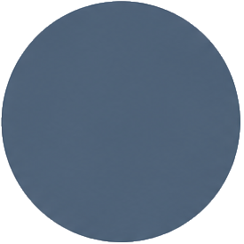
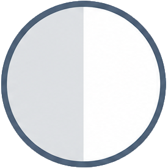
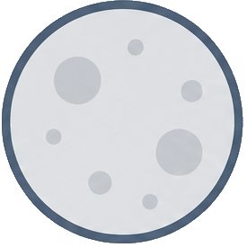
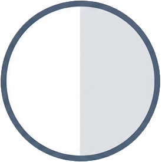
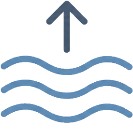
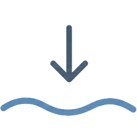

Helaas is er even geen informatietekst beschikbaar
Stromingsgids
Kaart duikgebied
Stromingsgegevens laden...
Legenda
Duiken afgeraden (stroming > 30 cm/s)
Alleen ervaren getijdenduikers (stroming 20-30 cm/s)
Alle getijdenduikers (stroming ≤ 20 cm/s)
Stromingskentering (vrijwel geen stroming)
Piekstroom (maximale stroming tussen kenteringen)

Nieuwe maan

Eerste kwartier

Volle maan

Laatste kwartier

Springtij

Dood tij
DisclaimerDe stromingsgegevens op deze pagina zijn afkomstig van Rijkswaterstaat en worden uitsluitend ter informatie aangeboden. Aan de weergegeven informatie kunnen geen rechten worden ontleend. Duiken in de Oosterschelde brengt risico's met zich mee. Elke duiker is zelf verantwoordelijk voor een veilige duikplanning en dient de lokale omstandigheden - waaronder stroming, zicht, weer en getij - altijd ter plaatse te beoordelen voordat er wordt gedoken. Deze pagina vervangt niet het eigen oordeelsvermogen van de duiker.